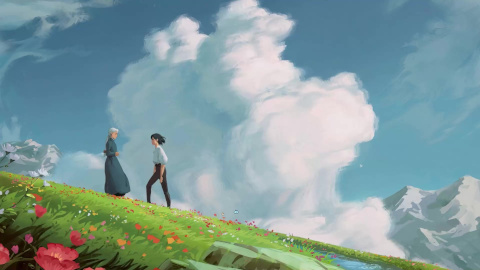

Merry Go round of life 10 horas
A música do filme de animação japonês de fantasia de 2004 do Studio Ghibli, Howl's Moving Castle, trata-se de uma trilha sonora bela e abrangente. Embora simples, ela se mostrou eficaz. Ela pode trazer lágrimas aos seus olhos com algumas notas bem colocadas, sem falhar. A partitura soa muito como uma canção de ninar e, embora possa ter o poder de fazer as crianças dormirem, ela desperta emoções totalmente diferentes nos adultos – faz com que você relembre-se de tempos mais felizes quando o mundo era muito mais simples.